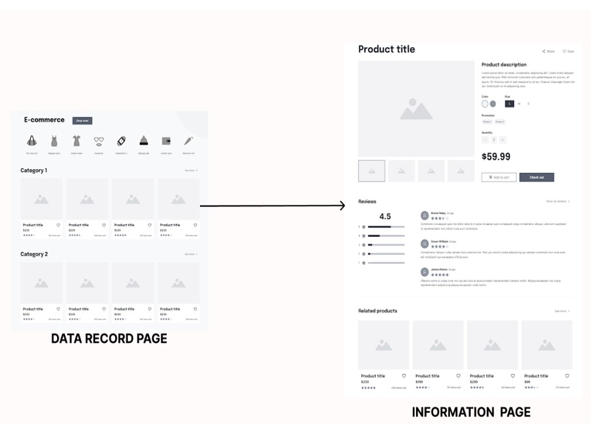
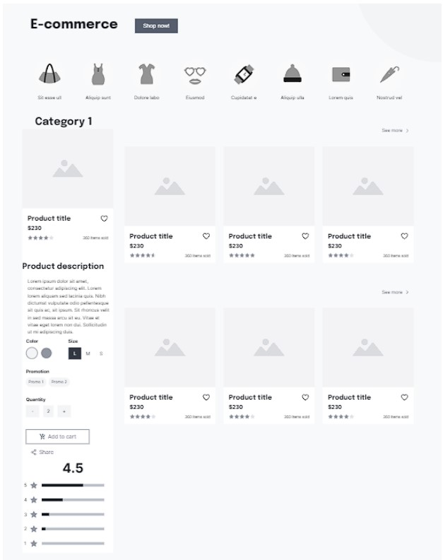
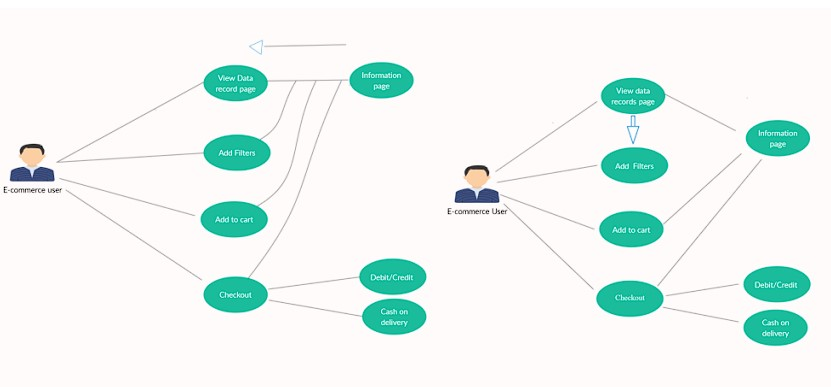
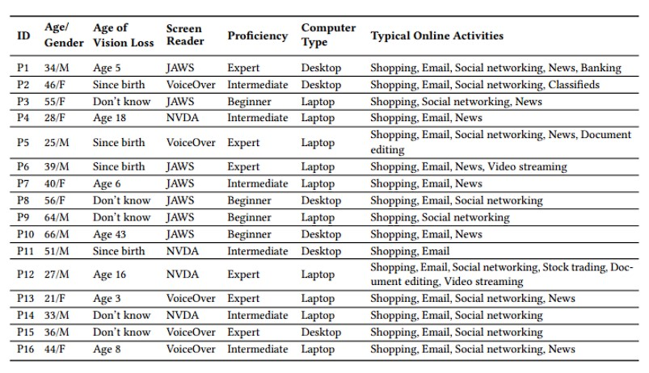

CS 732/832 –Human Computer Interaction, HW4
Group members: Mohan Krishna Sunkara(UIN: 01206224), Yash Prakash(UIN: 01162935)
Interface name: Convenient Interface for Ecommerce for Blind Screen Reader Users
Link of the prototype:
https://mohankrishnas3.github.io/Study/with_extension/Amazon.com%20_%20tv%20(3).html
Instructions to run the prototype:
Press the "Get detail" to get key content from next page like summary of popular reviews and description.
Information about scenario, purpose of the application and background information about the domain:
Most e-commerce websites need web data, such as shopping products, classified ads, and employment listings. The data items' information is usually spread across two or more web pages, such as a "Data-Record" page that displays the items' summaries and "Information" pages that contain the items' complete information." While this data organization reduces information overload and visual clutter for sighted users, it increases the interaction problems and effort for blind users because switching back and forth between websites using screen reader assistive technology is difficult and time-consuming. Due to their primary focus on facilitating efficient content access within a single webpage and as a result of not being designed for content distributed across multiple web pages, existing usability-enhancing solutions cannot provide adequate support in this respect.
 
low-fidelity prototype description:
Interaction with data items like shopping items, classified ads, employment postings, hotel or vehicle rentals, and available flights is necessary for web browsing. Modern websites typically offer additional tools like filters and sort options and further divide the content of the items into multiple web pages, for example, a "Data record" page showing the summary of data items and the "Information" pages presenting the complete information of the corresponding objects, to facilitate convenient interaction with the web data items. Blind users, on the other hand, must put forth more time and effort to obtain the same information as sighted users, who profit significantly from a such content organization mainly due to the abundance of visual cues that allow them to scan and get desired information about any item rapidly. Thus, I propose a UI wireframe that includes all information from the information page onto the data record page. The screen reader reads out the content on the screen and enables unique keyboard shortcuts or gestures for navigating the content. A typical screen reader, such as JAWS, NVDA, or Voiceover, allows blind users to navigate a webpage in several ways while browsing. However, navigation is still largely one-dimensional; blind users are frequently forced to read vast amounts of text before finding the desired information on a webpage unless they know the precise keywords to use when using the browser's built-in search feature. Blind screen reader users consequently usually require significantly more time and effort to complete.
Use Case:

Personas:
